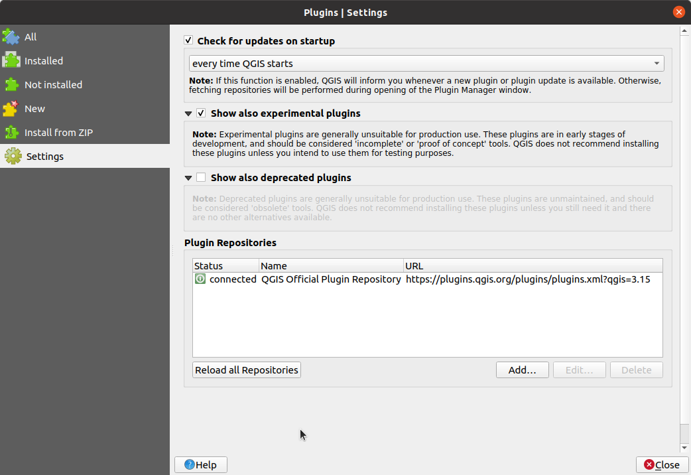
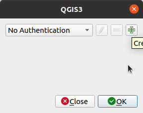
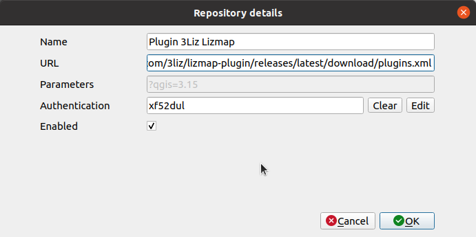

Ajouter un dépôt QGIS personnalisé pour des extensions
Dans votre gestionnaire des extensions, aller dans l'onglet Paramètres.
Cliquer sur Ajouter…

Remplir les informations avec
- Nom : Nom du dépôt. Ce nom est libre, par exemple
Plugin 3Liz XXX
- URL : URL du dépôt qui a été fournie par mail, par exemple
https://github.com/3liz/lizmap-plugin/releases/latest/download/plugins.xml
- Cliquer sur OK si votre extension ne nécessite pas une authentification. Si votre extension en requière une, lire plus bas.
- Cliquer sur Recharger le dépôt pour récupérer le contenu de ce nouveau dépôt. Ceci n'installe pas l'extension, cela ajoute seulement l'adresse du serveur pour trouver des nouvelles extensions.
Avant d'installer l'extension, ne pas oublier
- d'utiliser la case à cocher expérimentales si l'extension est expérimental. Sinon vous n'allez pas pouvoir voir l'extension à l'étape suivante
- d'utiliser la case à cocher Chercher des mises à jour au démarrage pour laisser QGIS vous informer automatiquement des mises à jour réguliérement.
Retourner sur l'onglet Toutes pour voir toutes les extensions disponibles et taper le nom de l'extension dans la barre de recherche. Vous devriez le voir et être capable de l'installer.
Ajouter une authentification
L'extension peut être protégé par un nom d'utilisateur/mot de passe. Dans le dialogue suivant, cliquer Éditer dans la ligne Authentification.
Par défaut, vous allez obtenir Pas d'authentification. Cliquer sur l'icône + pour en créer une.
Remplir avec les informations requises
- Nom : Nom de l'authentification. Ce nom est libre, par exemple
3Liz authentification
- Authentification basique
- Nom d'utilisateur avec le nom de l'utilisateur dans le mail.
- Mot de passe avec le mot de passe fourni.
- Cliquer Enregistrer
QGIS va remplir avec une chaîne aléatoire le jeton d'authentification pour accèder au dépôt. Vous pouvez désormais re-suivre la section précédente afin de recharger les dépôts.
